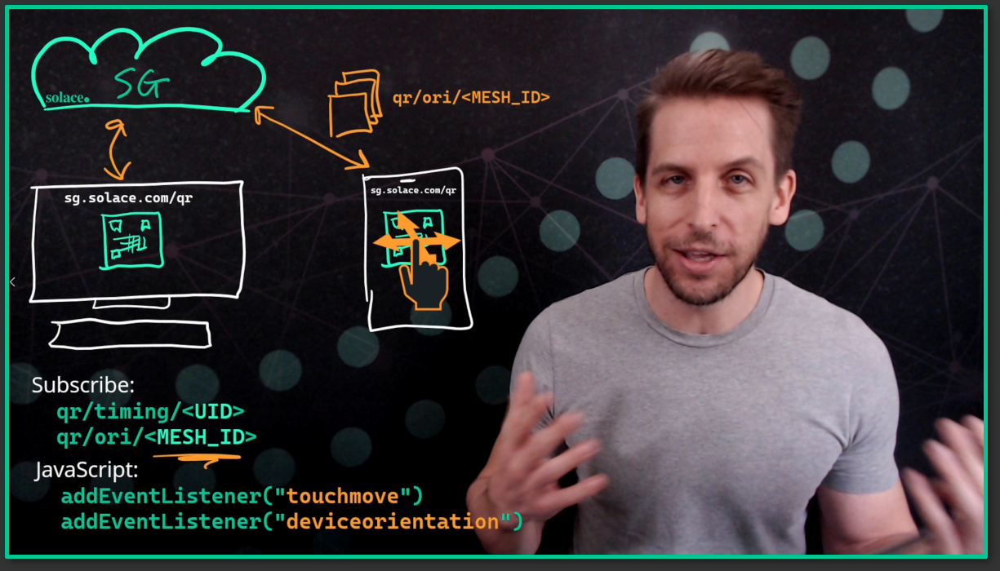

Explain Page
Watch this video for how it's done.
Scan the code, and link your phone to the demo. Note that iOS recently changed their security permissions, so access to the accelerometer data isn't there.
- When the webpage initially loads, it connects into 3 different MQTT cloud brokers spread around the globe
- It subscribes to a "timing" topic with a uniqueID, and then publishes a series of messages on that topic on each link, containing the current timestamp as payload
- It calculates the deltas of each of those messages as they are received back via the subscription, measuring the Round Trip Time (RTT) to each broker; it then chooses the "closest" one and disconnects from the other two
- It then generates another uniqueID, a "MESH_ID", and subscribes to an "orientation" topic with that MESH_ID, and generates a QR code with that MESH_ID embedded
- When the QR code is scanned, it tells the next webpage that loads where to connect and what topic to subscribe to
- JavaScript has various event handlers for touch and orientation data: in each event handler callback, I publish a message containing that information on the MESH_ID orientation topic
- Since both/all copies of the webpage are listening on the same topic, they each get a copy of the message data (standard pub/sub distribution), the cube is rotated by the amount specified in the payload, and so they are entangled

Hope you like it.
- Aaron